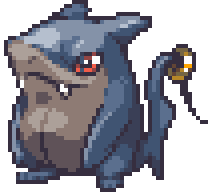
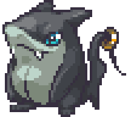
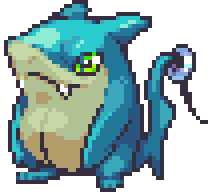

| ← #007 Nibblegar | #008 Sheartooth | #009 ??? → |
|---|
| Normal Form | Corodex Description | Type |
|---|---|---|
|  | Known as the pirate of the seas. Sheartooth's sharp teeth can easily tear through is prey. |  |
| Potent Form | Locations Data | Evolution Line |
|  | - Evolve Nibblegar. | - Nibblegar - Sheartooth (Level 17) - ??? (Level ???) |
| Perfect Form | Traits | |
|  | - Supersensory (25/70) - Fully Rested (45/70) |
| Stats | |
|---|---|
| HP | 64 |
| Attack | 36 |
| Defense | 45 |
| Sp. Attack | 37 |
| Sp. Defense | 45 |
| Speed | 34 |
| Skill set | |
|---|---|
| Level 1 | Chomp |
| Level 3 | Mighty Roar |
| Level 6 | Bubble Burst |
| Level 10 | Streamline |
| Level 13 | Feint Spurts |
| Level 18 | Splash |